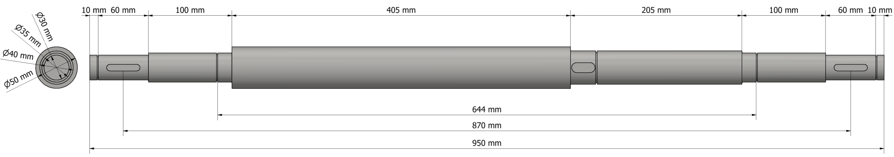

Shaft Design
The Shaft Design project required up to design a load bearing shaft that met constraints set out for it. The shaft was to be the rear axle of a motorised tricycle and therefore needed to take not only the rotational load of the drivetrain but also the load imposed by cargos of up to 300kg.
In order to design shafts more efficiently a spreadsheet was used to calculate the loads and to ensure they were below a failure limit. This took into account many factors that were both given and created, such as safety factor and load factor. The initial design below was very simple and was the first attempt at meeting the requirements.
Theoretically this shaft would have failed as the loads at some of the points where there is a large step in diameter have a very high stress concentration factor making them weak. Therefore the design went through multiple iterations, each time reducing the number of points of failure and making the final product less wasteful and easier to manufacture. These iterations are below ending in the final design.
First Iteration:
Third Iteration:
Fifth/Final Iteration:

After deciding on a final design, drawings of the shaft itself (including key features) and the subassembly it contributes to were produced so that anyone who took a look would understand the geometry.